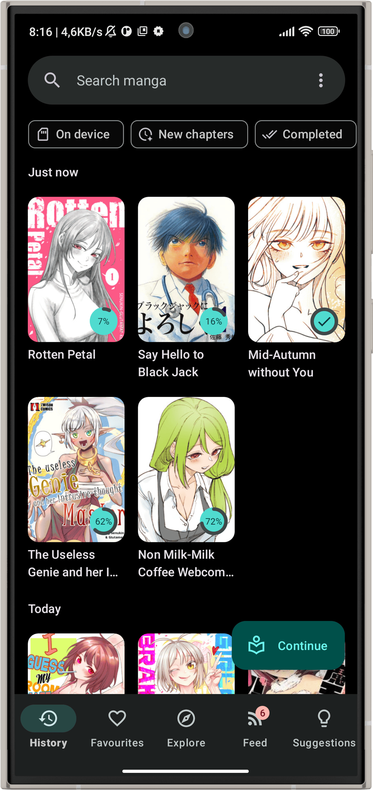
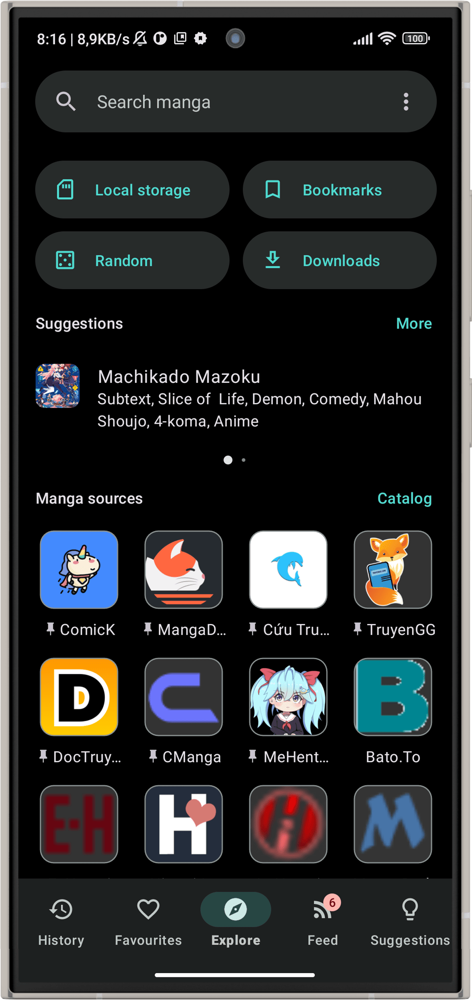

Kotatsu 停服之后，一个开源漫画阅读器的七年迭代在想什么
2025 年 10 月官方突然宣布停服，但已发布的 APK 还能正常跑、漫画源解析由社区接手。回头看它这些年的版本进化，能摸到一支小团队在"多源并行"这条线上死磕的完整脉络。
我看到 Kotatsu 停服公告的那天，正在地铁上翻它追了半截的一部漫画。弹窗跳出来的时候我以为是解析器挂了，退出重进才发现是官方仓库的声明——2025 年 10 月，Kakao Entertainment 的法律纠纷加上 Google 即将收紧的侧载政策，让这个开源漫画阅读器的主应用开发正式画上句号。
但有意思的是，我的应用本身没出任何问题。漫画照更、章节照下、连追踪服务的同步都还在走。这不是那种一停服就整个死掉的 SaaS——Kotatsu下载页面上的 APK 是完整离线的，漫画源解析走的是独立维护的库，追踪同步靠各家平台的公开 OAuth。官方停的是更新，不是已经跑在我手机里的那个东西。

这个"停服但没死"的状态，其实就是 Kotatsu 这些年迭代逻辑的缩影——去Kotatsu官网翻了一圈才确认，它从一开始就没把自己绑在单一服务上。
来路：从单源工具到多源并行框架
样本里没有给早期版本号，但从现有的功能倒推，能拼出它一路走过来的轮廓。
最早那批开源漫画阅读器解决的问题很朴素：给 Android 上一个能本地看漫画的壳子。但漫画这个品类的特殊性在于——没有哪一个源站能覆盖所有人。有人追日漫、有人看国漫、有人只扫英化组，单源意味着大量空白。Kotatsu 第一个明确的转折点，应该就是把"多漫画源并行"当成了核心架构而不是附加功能。
这个决定在后来的版本里不断被强化。去Kotatsu文档翻了一下，漫画源管理页支持拖拽排序，排在前面的源会被优先搜索——细节到这种程度，说明团队真的在追用户每天实际打开它的场景：有人只追三个更新频率稳定的源，排序置顶之后搜索结果直接就是想看的；有人装了十几个源但大部分不稳定，把靠谱的排前面就能减少翻页和等待。这种功能不痛不痒，但一个漫画阅读器能活到七年，拼的就是这些"用户愿意留下"的小地方。
追踪服务的集成也是同样的路数。早期的漫画阅读器要么不带追踪，要么只绑一个主流平台。Kotatsu 走的是全接入路线——AniList、MyAnimeList、Kitsu 都支持，而且可以同时连。一部漫画的阅读进度会同步到所有连接的服务上。Kitsu 作为走开源路线的平台被专门适配，API 友好、社区硬核，但选择它本身也说明 Kotatsu 的用户画像——这批人不在乎主流平台的社交功能，更在意数据能不能自己控制。
隐私功能藏在迭代的深处。清除阅读历史这个功能做得很细：可以一键清空，也可以选择性删除，而且明确告诉你哪些东西不受影响——收藏、下载、书签、追踪服务上的记录各自独立。隐身模式下阅读的内容本来就不会进历史。这些功能不是什么大版本的核心特性，但团队把它做全了，说明他们一直在想一个问题：用这个应用读漫画的人，会不会有"我不想留下痕迹"的需求？
规律：一支小团队一直在死磕什么
从这些功能的分布能看出节奏——Kotatsu 的迭代重心始终围绕两个方向转：多源并行和用户控制权。
漫画源可以自由排序、追踪可以全平台同时连、隐私可以精细清除、解析器独立于主应用存在——这一整套设计的底层逻辑是：不让用户被任何单一环节锁死。源站挂了？还有别的。追踪平台 API 变了？打个补丁就行。主应用停更了？解析器库社区接过去继续跑。这个架构选择在停服那天拿到了最好的检验。
但一直没被好好照顾的部分也很明显。样本里提到，旧版 Android 设备上的兼容性问题可能不再被修复——其实这不只是停服后的问题，回看之前的版本节奏，Android 7.0 以下的适配就一直在延期。团队的人力很有限，能把多源并行这条线做扎实已经不容易，兼容性这种"覆盖长尾用户但不直接影响核心体验"的事情自然排在后面。
追踪服务的 API 变更同样是这个逻辑。Kitsu 被专门适配是因为 API 开放、改起来方便；但如果某个追踪平台突然收紧 API，打补丁的优先级就取决于社区有没有人提需求、有没有人能帮忙写代码——小团队能做的有限。
还有一些细节能看出迭代节奏的变化。最近几个版本的 changelog 里，新功能越来越少，修 bug 的比例越来越高。解析器库的提交频率倒是一直稳定——因为那部分交给了社区，主应用本身已经进入维护模式。停服不是突然发生的，它是一个慢慢减速的过程，只是法律纠纷给了一个明确的终点。

预判：社区接手之后会怎么走
从 Kotatsu 官方宣布停服到现在快半年了，社区的反应基本印证了之前的推断——解析器库继续跑，主应用不再发版。
kotatsu-parsers 这个库独立于主应用维护，它的更新不需要主应用同步发版。新的漫画源来了，社区贡献者直接在这个库里提交解析代码，用户手动更新就能用。这个设计在架构上就把"源站适配"从主应用的发布节奏里解耦出来了——官方停服但解析不停，这不是巧合，是之前迭代时就埋下的伏笔。
但主应用本身不会再往前走了。追踪服务的 OAuth 流程、界面的细微调整、Android 新系统的适配——这些需要主应用发版才能推进的事情，大概率会卡在一个稳定的状态。除非社区有人 fork 出来一个分支继续维护，但从目前的情况看，大多数用户只是继续用已有的 APK，没有人真的牵头做这件事。
我自己的用法是：继续每天打开它追那部连载中的漫画，遇到新漫画源就等社区适配，每隔一段时间核对一下证书指纹确保 APK 没被动过。它现在的状态就像一台保养得当的老车——厂家不生产了，但零件还能买到，日常开着完全没问题。
从版本进化的角度回头看，Kotatsu 这支小团队做对了一件事：从架构上把自己和外部依赖解耦。这让它在停服那一刻没有灰飞烟灭，而是变成了一个还能跑的东西留在用户手里。七年的迭代，核心逻辑从来没变过——多源并行、用户控制、不把自己绑死。剩下的，交给社区和时间。好消息是社区没有散，GitHub、Gitee、GitCode上都有维护中的镜像和解析器库，不用担心哪天彻底找不到。